Open today's slides on your own phone or laptop — then you can run real code yourself.
hassanmiir.github.io/cpp-course/lecture3/
Dr. Mir Hassan
Associate Professor in Artificial Intelligence and Trustworthy Digital Systems
📱 Point your camera here
Lecture 3 · Operators & Expressions
Now let's do maths with our data
Last time you stored a student's marks. Today you'll compute with them — averages, percentages, and the pass/fail decision itself.
A 2-hour hands-on session · you'll build a working calculator
The Big Idea
An expression is a question the computer answers
You write a small sum; C++ works it out and hands back one value.
int total = 80 + 60; // expression on the right → 140
double avg = total / 2.0; // another expression → 70.0
An operator (+, /…) combines operands (the values) into a result.
80 + 60 → [ 140 ]
PART 1
The arithmetic operators
Five symbols for the everyday maths your programs need.
Add, subtract, multiply, divide
The remainder operator — the surprising one
Run a calculator — live
Reference
Four everyday operators
+
Add 7 + 2 → 9
-
Subtract 7 - 2 → 5
*
Multiply 7 * 2 → 14
/
Divide 7 / 2 → ?
Hold onWhat does 7 / 2 give? Not 3.5, if both numbers are int. That trap is the next slide.
The Division Trap
Two whole numbers divide to a whole number
7 / 2 // → 3 (not 3.5! the .5 is dropped)
7.0 / 2 // → 3.5 (one decimal makes it a real divide)
7 / 2.0 // → 3.5
(double)7/2 // → 3.5 (force it)
int ÷ int = int
C++ throws away the fraction. 7/2 is 3, 1/2 is 0.
The fix
Make one side a decimal: / 2.0. Now you keep the decimals.
Why it mattersAn average of marks with / 2 silently loses accuracy. Grades must use / 2.0.
New Operator
Modulo% — the leftover
% gives what's left over after dividing whole numbers.
17 / 5 // → 3 (how many fit)
17 % 5 // → 2 (what's left over)
Even or odd?
n % 2 == 0 → even. The classic use.
Split into groups
30 students, groups of 4 → 30 % 4 = 2 left over.
Work It Out On paper · 2 min
Fill in the table — no computer
Both numbers are int. Write the quotient / and the remainder % for each row.
13 / 4quotient =?13 % 4remainder =?
20 / 5quotient =?20 % 5remainder =?
7 / 10quotient =?7 % 10remainder =?
Pens down when you have all six. Then we check — and run it.
The Answer
Check your six
13 / 4=313 % 4=1(4×3 + 1 = 13)
20 / 5=420 % 5=0(divides evenly)
7 / 10=07 % 10=7(10 doesn't fit — all 7 left over)
The surprising one7 / 10 = 0 catches everyone. Fewer than one "10" fits, so the whole-number quotient is 0 and the remainder is the lot.
Your Turn · Live Code Run it!
A two-number calculator
Run it. Then change the numbers — try 7 and 2, and watch / vs % . (Input pre-filled: 17 5)
#include <iostream>
using namespace std;
int main() {
int a, b;
cin >> a >> b;
cout << "Sum: " << a + b << endl;
cout << "Difference: " << a - b << endl;
cout << "Product: " << a * b << endl;
cout << "Quotient: " << a / b << endl;
cout << "Remainder: " << a % b << endl;
return 0;
}
Quick Check Think!
What does 9 / 4 print, if both are int?
A 2.25
B 2
C 3
D 1
PART 2
Comparing & combining
Operators that answer true or false — the seed of every decision.

Compare two values
Combine conditions with and / or
The = vs == mix-up
Reference
Comparisons give a bool
Each of these asks a yes/no question and returns true or false.
><
greater / less
>=<=
or equal to
==
is equal?
!=
is not equal?
The #1 beginner bug= puts a value in a box. == asks a question. mark == 50 checks; mark = 50 overwrites!
Combine Conditions
and &&, or ||, not !
&& — both must be true
mark >= 50 && attended → passed and showed up.
|| — at least one is true
isStaff || isAdmin → either one grants access.
! — flips it
!isOpen → true when it's closed.
These build the pass/fail rule you'll use in Lecture 4.
Work It Out On paper · 2 min
True or false? Work each one out
Take mark = 72, attended = true, isStaff = false. Write T or F for each.
mark >= 50?
mark >= 50 && attended?
mark > 90 || isStaff?
!attended?
Reason it step by step — evaluate each side, then combine.
The Answer
How each one resolves
mark >= 50true72 ≥ 50 ✓
mark >= 50 && attendedtruetrue AND true
mark > 90 || isStafffalsefalse OR false — needs one true
!attendedfalseattended is true, ! flips it
That's the pass ruleRow 2 is exactly the condition your program builds next — a bool straight from the operators you just evaluated.
Your Turn · Live Code Run it!
Did the student pass?
A real condition: average ≥ 50 and attended. Change the marks and the attendance flag. (Input: 80 55 1)